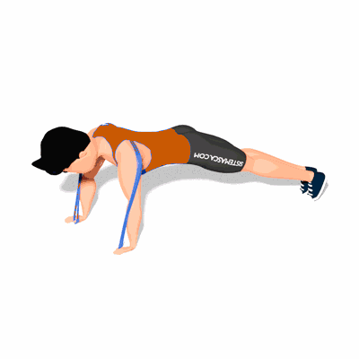

Flexão com Faixa Elástica

O exercício trabalha com intensidade os músculos dos ombros, tórax e peito, melhorando a estabilidade e a força do corpo.
Ficha Técnica
Tipo: Funcional
Grupo Muscular: Peito
Aparelho: Nenhum
Músculos: Nenhum
Como realizar
- Prenda uma faixa de resistência circular na parte superior das costas, com um dos lados em volta de cada uma das mãos;
- Fique no chão em uma posição de alta prancha;
- A partir daqui, faça uma flexão de estilo militar, o mais próximo possível do chão;
- Pausa, depois pressione as mãos para estender os braços e levantar de volta para uma prancha alta.
 RC STORE
RC STORE